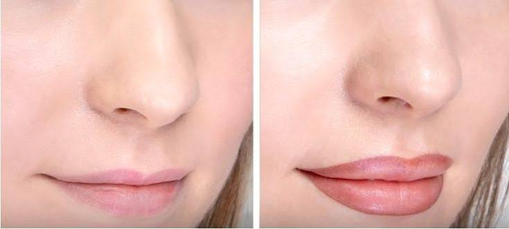
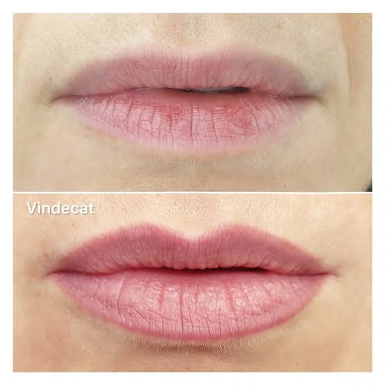

Corectăm asimetriile, redăm volum vizual și uniformizăm nuanța buzelor, printr-o pigmentare naturală, adaptată tenului și formei feței tale.

Conturul de buze presupune trasarea unei linii fine, discrete, care corectează asimetriile naturale și definește marginea buzelor. Este o intervenție minimală, potrivită pentru cine își dorește un contur mai clar, fără o schimbare vizibilă de culoare.

Procedura completă include atât conturarea, cât și pigmentarea uniformă a întregii suprafețe a buzelor, într-o nuanță aleasă împreună, apropiată de culoarea naturală sau ușor intensificată.
Rezultatul oferă un aspect hidratat și odihnit, uniformizează petele de pigmentare și poate crea iluzia unui volum ușor mai mare, fără proceduri invazive.
Un protocol atent, gândit pentru confortul tău pe tot parcursul procedurii.
Alegem împreună forma conturului și nuanța potrivită tenului tău.
Aplicăm crema anestezică și așteptăm efectul, pentru un confort maxim (~20-30 minute).
Realizăm conturarea și/sau pigmentarea în condiții sterile. Durată: 90–120 minute.
La aproximativ 40 de zile, evaluăm vindecarea și ajustăm, dacă este cazul, forma sau intensitatea culorii.
Procedura nu este recomandată persoanelor care suferă de:
Programează o consultație gratuită și alegem împreună nuanța potrivită ție.